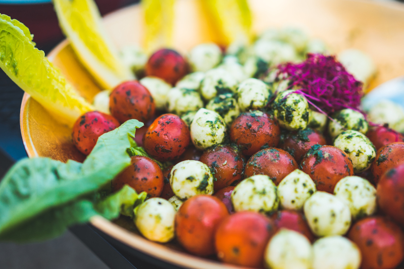

Tomatoe Salad

A delicious summer salad for tomato lovers
Quick and easy to throw together, this is a perfect weeknight side dish. Fresh ingredients and a little balsamic glaze make this dish shine.
- 4 large tomatoes
- 4 Tablespoons olive oil
- 10 oz mozzarella cheese
- 8 - 12 fresh basil leaves
- salt and pepper to taste
- Chop tomatoes in half, then dice.
- Cut cheese into slightly smaller cubes.
- Cut or tear basil leaves into strips.
- Mix all ingredients in large mixing bowl.
- Add olive oil and mix, seasoning to taste.
- Refrigerate for 30 min. and serve with balsamic glaze.
Back to Odin-Recipes